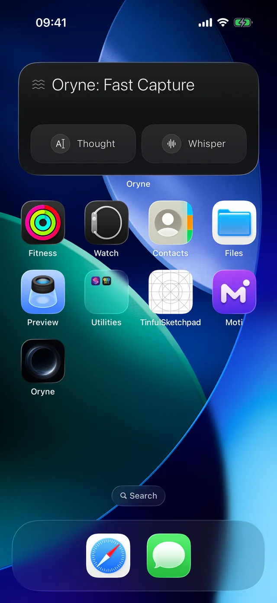

Branch
Grow an idea without losing the original.
Branch any thought into a question, a concept, research, or a project. The original stays exactly as you wrote it.

For iPhone and iPad
Oryne is a calm home for your thoughts, voice notes, screenshots, and links. Related ideas gather on their own, and forgotten ones come back when they matter.

How it works
Capture
Voice, text, screenshots, and links, from anywhere on your iPhone.
Learn more about captureFast Capture
Set the Action Button once. Oryne opens already listening, from anywhere.
Learn more about Fast CaptureGather
Related thoughts drift together into currents. No folders, no tags.
Learn more about currentsResurface
One forgotten idea returns each day, right when it might matter.
Learn more about resurfacingAsk
Question your own ideas and see the thoughts behind every answer.
Learn more about AskCapture
Speak, type, snap, or share. Oryne takes the thought exactly as it comes and never asks you to file it first.
Set the Action Button or the Control Center button to Fast Capture. Oryne opens already listening.
Your words appear as you speak. If your iPhone is set up for two languages, Oryne listens for both.
Screenshot + voice keeps what was on your screen together with a spoken note.
Send links, images, and text to Oryne from the share sheet. Links arrive with their title and preview.
“Hey Siri, add an inspiration to Oryne.” Your thought is saved without opening the app.

Fast Capture
Set the Action Button to Fast Capture, and Oryne opens straight into a recording from anywhere on your iPhone. No finding the app, no tapping through screens. Say it, and get back to what you were doing.
Settings › Action Button › Shortcut › Start Fast Capture. From then on, one press starts a capture.
Add Oryne's Fast Capture button to Control Center for the same one press from any screen.
You choose which one opens. Voice starts recording the moment it appears. Typing opens with the keyboard already up.
When you stop, Oryne shows your words for three seconds, then releases them into the Ocean. Tap the words if you want to change them first.
The Fast Capture widget gives you Thought and Whisper, one tap each. There is a Lock Screen one as well.


Currents
Oryne reads what each thought is about and gathers related ones into currents. You never make a folder, pick a tag, or decide where something goes.
A sunset photo and a note about warm light end up together, even when they share no words.
Ideas overlap, so a thought can belong to more than one current. Folders can't do that.
Every thought gets a short title, written on your device. Change it, and it stays yours.

Resurfacing
Every day, one thought you haven't seen in a while rises to the surface. Not a reminder, not a task. Just a good idea, back in view.
The Resurfacing widget shows the day's thought on your Home Screen or Lock Screen.
Older thoughts that share a current with your latest ones get a gentle lift.
A thought you just revisited rests for a while before it can rise again.
Ask
Oryne answers from the thoughts you've caught and shows which ones it used, so every answer leads back to your own words.
Find the thought you half remember.
See what a pile of notes adds up to.
Take an idea somewhere new.
Look beyond your notes, clearly marked as outside your Ocean.
Answers are composed on your device, with Apple Intelligence on supported models.

Branch
Branch any thought into a question, a concept, research, or a project. The original stays exactly as you wrote it.
Library
Search every thought, filter by kind, and switch between Recent and Related.

Use cases
Screenshot a palette on the bus and say what caught your eye. Your color studies gather into one current, ready when the project starts.
Image
Sunset gradient study
The orange does not end. It cools into violet before the horizon eats it.
light and color
Thought
Warm to cool, not a filter
Stop adding an orange overlay. The sunset is already a temperature shift: 3500K down into blue. Match that, don't fake it.
light and color
Image
Desk at 6pm
The wall goes peach, then slate, as the sun drops. Worth sampling before picking the app background.
light and color
Half a sentence on the train, a line overheard in a café. Oryne keeps the fragments until they are ready to become paragraphs.
Whisper
The house kept its summer smell
Opening line? The house kept its summer smell long after we closed it up.
writing
Thought
Overheard at the café
“I only lie about small things.” Character, not dialogue.
writing
The 2 a.m. product idea, the link worth keeping, the thing a customer said. Later, ask what you keep circling.
Thought
Half a sentence from the train
What if the home screen was just one thought, not a grid.
product ideas
Thought
A button that doesn't need a label
If the icon is the action, the word next to it is noise. Cut the word first.
interface design
Link
Apple Design Principles
developer.apple.com
Guidance that keeps an interface feeling like it belongs on the phone.
user experience
Quotes, articles, and questions. Branch any of them into research, then ask what your sources have in common.
Link
Are.na Editorial
are.na
Notes on attention, collecting, and slow software. Saving is not the same as seeing.
reading
Research
What makes a collection useful?
Branch of Are.na Editorial
Look at what the best collections leave out.
reading
Recipes, gift ideas, places to try. The small things you would otherwise lose.
Thought
Weeknight noodles
Chili oil, garlic, leftover greens. Ten minutes. Don't lose this one.
cooking
Thought
Fix the old radio for Dad
He still talks about the one from the old kitchen. Find someone who repairs valve radios.
gifts
Image
The dumpling place by the station
Pork and chive, a queue out the door at seven. Go on a weekday.
places
Notes apps help you write things down. Oryne helps you keep ideas alive.
| A typical notes app | Oryne | |
|---|---|---|
| Saving an idea | Open the app, make a note, name it, pick a folder. | Press a button and speak. |
| Staying organized | Up to you, forever. | Related ideas gather on their own. |
| Old ideas | Sink out of sight. | Come back, one a day. |
| Finding something | Guess the right keyword. | Ask in your own words and see the sources. |
| Growing an idea | Edit over the original. | Branch it. The original stays. |
Privacy
Oryne is built so your thoughts never have to leave your devices, and there's no account to create.
Titles, themes, currents, and answers are worked out on your iPhone or iPad.
Your Ocean moves between your devices through your private iCloud.
Not in the app, and not on this website.
Take your whole Ocean with you as Markdown files.
iPhone with iOS 18 or later, and iPad with iPadOS 18 or later. Answers written by Apple Intelligence need a model that supports it.
No. Oryne syncs through your iCloud, and works fully without it.
On your devices, and in your private iCloud if you use it. We can't see them.
Yes. Capturing, currents, resurfacing, and Ask all work without a connection. Link previews need one, and so does voice transcription in languages your device can't transcribe on its own.
Yes. Oryne speaks English and 简体中文. Choose in Settings › Oryne › Language.
Yes. In Oryne's Settings, Export the Ocean saves everything as Markdown files, one per current, with a JSON backup.
Your next idea is on its way. Be ready for it.